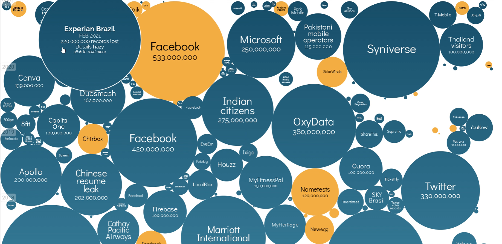

The data visualization that I shall be discussing in this blog post is World's Biggest Data Breaches & Hacks (https://informationisbeautiful.net/visualizations/worlds-biggest-data-breaches-hacks/). I will be focussing this analysis on how this infographic uses interactivity as a semiotic device.
First, I will discuss what I understand about what a semiotic device is. Semiotics refers to the study of signs and symbols, in other words it is the study of how meaning is being created. A device is described as being something that is made or adapted specifically for some purpose. A semiotic device, as I understand it, is a system of some kind that is specifically designed to create or support meaning with regards to signs or symbols.

The above infographic consists of bubbles that represent the different data breaches, when the user hovers their mouse over one of the bubbles it expands and displays more information related to the topic of that bubble (as shown in the Experian Brazil bubble in the top left corner of the image above).
How does this simple interaction add meaning to the data? This interactive visualization system allows the user to take their time going through the data that is being visualized. It allows the user to pick the headings/topics that seem interesting to them personally. The system is designed to make the bubbles feel like information holders, the bubbles are thus symbols of data (they represent individual events of data breaches). The interaction here refers to the user taking part in a dialogue with the infographic, this dialogue consists of the user asking the infographic for more information about specific instances of data breaches.
Ultimately, I believe that the semeiotics aspect here refers to the bubbles that represent pockets of data, they are they symbolize events of data breaches. The device aspect refers to the interaction system that is designed specifically to let the user view the different bubbles in detail at their own pace. This is how the interaction acts as a semeiotic device.